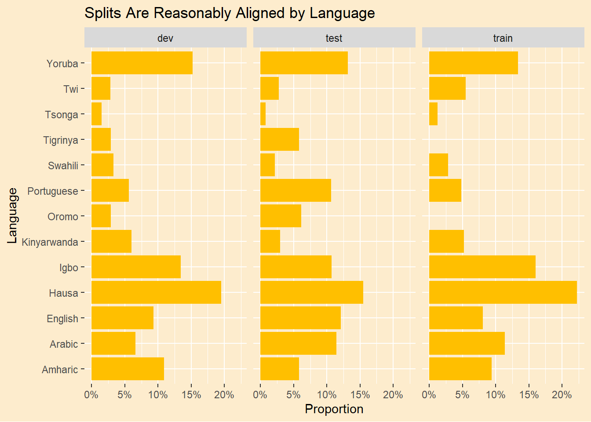
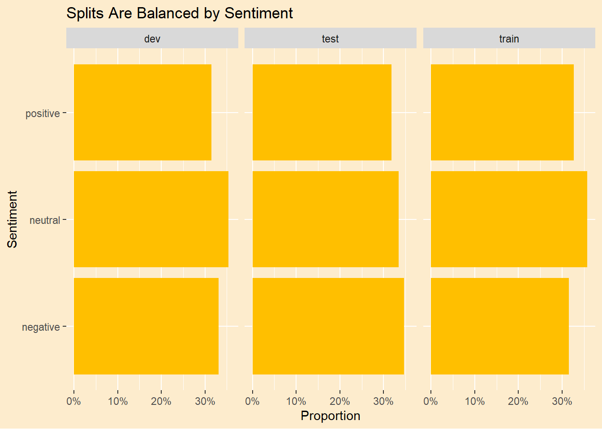

Sentiment Analysis Using Google Translate (Pt. 3 - Machine Learning)
tidytext
twitter
machine learning
xgboost
Author
Art Steinmetz
Published
April 22, 2023
Introduction
In Part 2 of this series we learned that summing the valence measurement of the words in the Afrisenti data set did not agree well with the sentiments already provided. While the sentiments we calculated made sense in general, they were measured without any knowledge of how the original sentiments were determined. For this post we will apply machine learning techniques to try to reverse engineer the thinking that went into the sentiment assignments.
In our previous analysis we were only in agreement with original data about 50% of the time. Can our trained models do any better? If we pass the tweets through Google Translate first to convert them all to English, will we improve or worsen the accuracy of the model? Let’s see.
We will take the usual machine learning approach of splitting the data into test and training sets, then run a classifier model on the training set and finally validate it against the test set.
suppressPackageStartupMessages({library(tidyverse)library(tidytext)library(quanteda)library(tictoc)library(xgboost)})# set up some chart defaultstan1 <-"#FDECCD"yellow1 <-"#FFBF00"green1 <-"#007000"theme_afri <-function(...){# making a function allows passing further theme elements ggplot2::theme(plot.background =element_rect(fill = tan1, color =NA),panel.background =element_blank(),legend.background =element_blank(),legend.box.background =element_blank(),legend.key =element_blank(), ... ) }# the the previously translated tweets.afrisenti_translated <- readr::read_csv('https://raw.githubusercontent.com/apsteinmetz/tidytuesday/master/2023-02-28_african_language/data/afrisenti_translated.csv',show_col_types =FALSE) |>mutate(lang =as.factor(assigned_long)) |>mutate(sentiment =as.factor(label)) |>mutate(intended_use =as.factor(intended_use)) |>select(lang,tweet_num,sentiment,translatedText,tweet,intended_use)afrisenti_translated
# A tibble: 111,720 × 6
lang tweet_num sentiment translatedText tweet intended_use
<fct> <dbl> <fct> <chr> <chr> <fct>
1 Amharic 1 negative Amhara region needs moderatio… አማራ … dev
2 Amharic 2 negative Having a mood in a way that a… ሰውን … dev
3 Amharic 3 negative Domestic violence - without h… የቤት … dev
4 Amharic 4 negative Ethiopia, what was your role … Ethi… dev
5 Amharic 5 negative No matter how Oromo learns, t… ኦሮሞ … dev
6 Amharic 6 negative Tish, dark powder, are you st… ቲሽ ጨ… dev
7 Amharic 7 negative Local residents said that the… በምዕራ… dev
8 Amharic 8 negative What happened to Schimmels is… ያየሰው… dev
9 Amharic 9 negative An unstable country does not … ያልተረ… dev
10 Amharic 10 negative The idiot and the bubble, the… ደደቡ … dev
# ℹ 111,710 more rows
Explore the Data Set
summary(afrisenti_translated)
lang tweet_num sentiment translatedText
Hausa :22152 Min. : 1 negative:36564 Length:111720
Igbo :15715 1st Qu.: 27931 neutral :39151 Class :character
Yoruba :15127 Median : 55861 positive:36005 Mode :character
Arabic :12061 Mean : 55861
English:10556 3rd Qu.: 83790
Amharic: 9480 Max. :111720
(Other):26629
tweet intended_use
Length:111720 dev :13728
Class :character test :34307
Mode :character train:63685
The data set is already tagged into training, test and “dev” sets. The training set is twice the size of the test set. What is “dev?” I don’t know if this split is random or not but we are concerned whether the profile of the training set is similar to the test set. Let’s split it according to the tags.
Now we’ll see if the training set is representative of the test set. Do the languages align?
afrisenti_translated |>ggplot(aes(lang,group=intended_use)) +geom_bar(aes(y =after_stat(prop)),fill = yellow1) +scale_y_continuous(labels=scales::percent) +theme_afri(axis.text.x =element_text()) +coord_flip() +facet_grid(~intended_use) +labs(title ="Splits Are Reasonably Aligned by Language",y ="Proportion", x="Language")

Looks okay.
Do the sentiments align?
afrisenti_translated |>ggplot(aes(sentiment,group=intended_use)) +geom_bar(aes(y =after_stat(prop)),fill=yellow1) +scale_y_continuous(labels=scales::percent) +theme_afri(axis.text.x =element_text()) +facet_grid(~intended_use) +coord_flip() +labs(title ="Splits Are Balanced by Sentiment",y ="Proportion", x="Sentiment")

The splits are well balanced.
Approach to the Problem
The structure of our model is basically a regression with one dependent variable and thousands of independent variables which are all of the words (“tokens”) in all the tweets. This is a “document feature matrix” (DFM). What goes in the cells of the matrix? One approach would simply code each of the words by their presence or absence in the tweet. A more nuanced approach is to code each word in each tweet by how important it is in the tweet. “tf-idf”, is sort of a uniqueness measure. This has the added benefit of down-ranking stop words that appear very frequently all over the place, even if we have no stop-word lexicon for a certain language.
There are several machine learning models we might try. There are two R packages suitable for classifiers where there are more than two categores that also work with sparse matrices (see below), ranger and xgboost. In preview, we will use xgboost here because the results are about same but xgboost is much faster. Here is a short comparison of different machine learning approaches to sentiment analysis.(Saifullah, Fauziah, and Aribowo 2021)
Why not tidymodels?
I set out to use RStudio’s suite of machine learning workflow packages, tidymodels, in this project, but quickly became frustrated. I could not get the wrapper around xgboost to give a sensible result (it’s probably my fault) and there is a bug in the wrapper around ranger that prevents making predictions with the model. So we’ll do it the old-fashioned way.
Pre-Processing.
There are some things we can to do boost our chances of a satisfying outcome. As noted above we’re going to build a matrix with the tweet numbers, an arbitrary index to uniquely identify each tweet (“document”), as the rows, and each word in every tweet (“feature”) as the columns. This will create a “document feature matrix.”
Before we create the matrix, we first split all the tweets into individual words (“tokens”) and refine that list to make it more managable. Let’s create a few functions to help us with this.
What do we do when a negation flips the sentiment of a tweet? “I Love” is positive but “I do not love” is negative. In our previous post we tried sentence-level analysis to handle negation. Here we are doing word level training. We will address this by creating new tokens where any instance of, say “not love” is replaced by “not_love,” an entirely new word for our analysis. This is very crude and only includes English (9% of the tweets), but it’s something. It’s actually simpler to do use the str_replace_all(tweet,"not |no ","not_") function to do this before we tokenize the tweets.
When we measured the tweets using a sentiment lexicon, only the words in the lexicon contributed to the sentiment measurement. Everything else was neutral. With machine learning everything counts and the more words we have, the bigger the model and the longer it will take to train. It is common in analyzing text to drop low-information words or “stop words.” In English, we drop words like “the” and “that.” We want to build a list of stop words relevant to our data set. On Kaggle I found a list of stop words in various African languages. It doesn’t cover every language in our data set but will reduce the matrix size a bit. We’ll add that to the lexicon of English stop words and a custom lexicon built from a quick inspection of the data set. In practice, the tf-idf score is the biggest indicator of a low-information word, irrespective of language.
stop_words_af <- readr::read_csv('https://raw.githubusercontent.com/apsteinmetz/tidytuesday/master/data/stopwords_af.csv', show_col_types =FALSE)# add my stop words to defaultsmy_stop_words =tibble(word =c("http","https","dey","de","al","url","na","t.co","rt","user","users","wey","don",as.character(1:100)))# make a stopword list of any 1-character words# this is a somewhat arbitrary rubric for African language stop wordsstop_words_1char <- afrisenti_translated |>unnest_tokens(word,tweet) |>select(word) |>filter(str_length(word)<2) |>unique()full_stop_words <-c( tidytext::stop_words$word, my_stop_words$word, stop_words_af$word, stop_words_1char$word) |>enframe(value ="word")remove_stopwords <-function(tokens) { tokens |># remove stop wordsanti_join(full_stop_words)}
Did we say every word? Well, not EVERY word. 260,000 is more than we can handle so let’s create a helper function to prune the data set to only the words with the highest frequency.
only_top_words <-function(tokens, word_count =2000) { chosen_words <- tokens |>ungroup() |>select(word) |>count(word) |>slice_max(order_by = n, n = word_count) |>select(-n)return(inner_join(tokens,chosen_words))}
Even after pruning there are over 2,000 unique words in this set of tweets. 2,000 variables and over 110,000 tweets. That’s a pretty big matrix, over 120 million elements, but the vast majority of those elements are filled with zero. We can make the memory size of this monster manageable by using a “sparse matrix.” Such a matrix describes what elements are empty without actually populating them. Fortunately both ranger and xgboost understand sparse matrices.
The function make_dfm is our workhorse. It takes the raw tweet data and turns it into sparse document feature matrix after applying our pre-processing steps. Note that the matrix does not contain our independent variable, “sentiment.” That is a separate vector we attach to the matrix as a docvar, part of a quanteda::dfm object.
Note the order of our pre-processing matters. First we create negation tokens, then we prune stop words, then we compute the tf-idf and finally we take the top words. By trial and error I learned that computing each word’s tf-idf against the whole data set before choosing the top words yields a better result. Spoiler alert: around 2000 words is the sweet spot.
We’ll establish a baseline by training a model on the African-language tweets.
Note that we don’t care what language the token is. It could be any language or no language. It could be an emoji, as long as it is associated with a sentiment. There is a risk that the same word could convey the opposite sentiment in two different languages but I assume it is rare enough to ignore.
# more words in common in the translated word listtranslated =FALSEtweet_train_dfm <-make_dfm(tweet_train,translated = translated,num_words =2000)tweet_test_dfm <-make_dfm(tweet_test,translated = translated,num_words =2000)
How sparse is the training DFM? 99.8% of the the entries are zero.
After creating DFMs for both training and testing we see that the DFMs have about 3/4 of the words in common so there is a good bit of information for prediction out-of-sample.
# how close are the word lists?}# more words in common in the translated word listinner_join(enframe(dimnames(tweet_train_dfm)[[2]]),enframe(dimnames(tweet_test_dfm)[[2]]),by ="value") |>nrow() |>paste("Words in both train and test sets")
[1] "1508 Words in both train and test sets"
Running predictions on a test set requires the feature list of the training and test set be the same. Three quarters, but not all, of the tokens overlap in our DFMs. The dfm_match function will ensure the test set features are congruent with the training set.
# make sure test set has all variables in both train and test setstweet_test_dfm <-dfm_match(tweet_test_dfm, features =featnames(tweet_train_dfm))
We will use the gradient boosted tree approach to training our model. An excellent introduction to the theory is contatined in the documentation to the xgboost package, which is available for many languages, by the way.
This is a supervised model, meaning we know all the possible predictions ahead of time. In this case, “negative,” “neutral” and “positive.” A slight “gotcha” is xgboost requires numeric classifiers, with the first one as “0.” As such, we convert our dependent variable, which is a factor, to numeric and then covert it back after predicting.
# run the modelstic()xg_fit <-xgboost(data = tweet_train_dfm,max.depth =100,nrounds =100,objective ="multi:softmax",num_class =3,label =as.numeric(tweet_train_dfm$sentiment)-1,print_every_n =10)
In the interest of space, we won’t go over tuning the model or cross validation, both of which are used to optimize performance. I played around with the parameters of the model and settled on the ones used here as roughly optimal. If we plot the loss function below we see the diminishing marginal return to additional training rounds. Adding more rounds continues to improve the fit to the training set (in theory we would ultimately achieve a perfect fit) but the fit to the test set doesn’t improve at all.
Alas, the accuracy of our machine learning model is not much better than our simple valence measurements from the last post.
# predict and convert classes back to factorspredicted <-predict(xg_fit,tweet_test_dfm) |>as.factor()levels(predicted) <-levels(tweet_test$sentiment)predicted_for_table <-tibble(actual = tweet_test_dfm$sentiment, predicted)caret::confusionMatrix(table(predicted_for_table))
Confusion Matrix and Statistics
predicted
actual negative neutral positive
negative 5524 4598 1261
neutral 2489 7011 1182
positive 2100 3287 4981
Overall Statistics
Accuracy : 0.5401
95% CI : (0.5346, 0.5455)
No Information Rate : 0.4593
P-Value [Acc > NIR] : < 2.2e-16
Kappa : 0.3095
Mcnemar's Test P-Value : < 2.2e-16
Statistics by Class:
Class: negative Class: neutral Class: positive
Sensitivity 0.5462 0.4707 0.6709
Specificity 0.7375 0.7907 0.7846
Pos Pred Value 0.4853 0.6563 0.4804
Neg Pred Value 0.7820 0.6375 0.8893
Prevalence 0.3118 0.4593 0.2289
Detection Rate 0.1703 0.2162 0.1536
Detection Prevalence 0.3510 0.3294 0.3197
Balanced Accuracy 0.6419 0.6307 0.7278
Train on English Translated Tweets
# more words in common in the translated word listtranslated =TRUEtweet_train_dfm <-make_dfm(tweet_train,translated = translated,num_words =2000)tweet_test_dfm <-make_dfm(tweet_test,translated = translated,num_words =2000)
Now how many words are shared among the training and test sets? If there is a case to be made for a better outcome with the translated tweets, this is it. We have more words in common across the training and test sets since, by converting 13 languages to 1, we have fewer unique words and thus more information in each word. In practice this doesn’t make much of a difference. There are less than 200 additional words in common. Surprising.
# how close are the word lists?}# more words in common in the translated word listinner_join(enframe(dimnames(tweet_train_dfm)[[2]]),enframe(dimnames(tweet_test_dfm)[[2]]),by ="value") |>nrow() |>paste("Words in both train and test sets")
[1] "1678 Words in both train and test sets"
Once again we match the features.
# make sure test set has all variables in both train and test setstweet_test_dfm <-dfm_match(tweet_test_dfm, features =featnames(tweet_train_dfm))
We will use the same model parameters as we did with the native tweets.
# run the modelstic()xg_fit <-xgboost(data = tweet_train_dfm,max.depth =100,nrounds =100,objective ="multi:softmax",num_class =3,label =as.numeric(tweet_train_dfm$sentiment)-1,print_every_n =10)
# predict and convert classes back to factorspredicted <-predict(xg_fit,tweet_test_dfm) |>as.factor()levels(predicted) <-levels(tweet_test$sentiment)predicted_for_table <-tibble(actual = tweet_test_dfm$sentiment, predicted)caret::confusionMatrix(table(predicted_for_table))
Confusion Matrix and Statistics
predicted
actual negative neutral positive
negative 5678 4146 1432
neutral 2233 6607 1483
positive 1905 3245 5178
Overall Statistics
Accuracy : 0.5473
95% CI : (0.5418, 0.5528)
No Information Rate : 0.4387
P-Value [Acc > NIR] : < 2.2e-16
Kappa : 0.3217
Mcnemar's Test P-Value : < 2.2e-16
Statistics by Class:
Class: negative Class: neutral Class: positive
Sensitivity 0.5784 0.4720 0.6398
Specificity 0.7475 0.7925 0.7837
Pos Pred Value 0.5044 0.6400 0.5014
Neg Pred Value 0.7996 0.6576 0.8649
Prevalence 0.3076 0.4387 0.2536
Detection Rate 0.1780 0.2071 0.1623
Detection Prevalence 0.3528 0.3235 0.3237
Balanced Accuracy 0.6630 0.6323 0.7118
Conclusion
Again, we see a disappointing result. Machine learning did not significantly increase the accuracy of our sentiment measurement. It is interesting that translating the tweets to English DOES improve the model accuracy, but by a puny amount. I’m not sure the conclusion would survive cross-validation. Here’s the summary for all the methods we’ve done.
Valence by Word
Valence by Sentence
XGBoost - Native
XGBoost - English
Accuracy
51%
51%
54%
55%
Kappa Statistic
26%
27%
31%
32%
Obviously, we’re doing “toy” models. Serious researchers on this subject have achieved better results. In particular, a model called “AfroXLMR-Large” cited in the original paper(Muhammad et al. 2023) achieved an average accuracy across all languages of 67.2% on this data set. This is a pre-trained model with over 270 million variables.
Hopefully this was useful as a introduction to some of the techniques used in sentiment analysis and the R tools we can use for the task.
In the final post in this series we’ll look at something of more general interest. There has been much talk about how the “Global South” feels neglected by the rich countries in the northern hemisphere. Can we use the sentiments expressed in the Afrisenti data set to get feelings about specific regions?
References
Muhammad, Shamsuddeen Hassan, Idris Abdulmumin, Abinew Ali Ayele, Nedjma Ousidhoum, David Ifeoluwa Adelani, Seid Muhie Yimam, Ibrahim Sa’id Ahmad, et al. 2023. “AfriSenti: A Twitter Sentiment Analysis Benchmark for African Languages.” In.
Saifullah, Shoffan, Yuli Fauziah, and Agus Sasmito Aribowo. 2021. “Comparison of Machine Learning for Sentiment Analysis in Detecting Anxiety Based on Social Media Data.”arXiv. https://doi.org/10.48550/ARXIV.2101.06353.